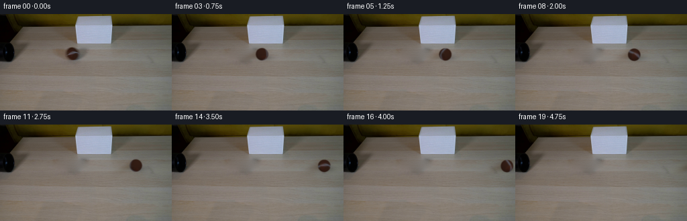

CODING AGENTS AS PIXEL WORLD MODELS
traex/GPT-6.1-Sol · 0149
点击播放 · 原生 RGB 像素
逐轮保存的候选
回放视频、检查图与代码变化。
每份候选均可单独播放。实际图片检查记录在下方工具轨迹中。
候选 01播放与检查图
点击播放 · 原生 RGB 像素

展开代码变化
--- 上一保存版本
+++ 本次保存版本
@@ -0,0 +1,145 @@
+from pathlib import Path
+import numpy as np
+from PIL import Image
+from scipy.ndimage import gaussian_filter, map_coordinates, distance_transform_edt
+from scipy.sparse import lil_matrix
+from scipy.sparse.linalg import spsolve
+import artifact_io
+
+ROOT = Path(__file__).resolve().parent
+W, H = 256, 144
+CX, CY, R = 108.0, 59.0, 9.25
+
+
+def clean_table(image):
+ """Interpolate the table that is hidden by the initial rolling ball."""
+ yy, xx = np.mgrid[:H, :W]
+ removal = (((xx-104)/29)**2 + ((yy-59)/9.6)**2 < 1)
+ removal |= (((xx-108)/15.5)**2 + ((yy-59)/11.5)**2 < 1)
+ # Keep the lampshade, the tube, and all other directly visible surfaces.
+ ys, xs = np.where(removal)
+ indices = np.full((H,W), -1, dtype=int)
+ indices[ys,xs] = np.arange(len(ys))
+ system = lil_matrix((len(ys),len(ys)),dtype=np.float64)
+ rhs = np.zeros((len(ys),3))
+ for k,(y,x) in enumerate(zip(ys,xs)):
+ system[k,k] = 4
+ for dy,dx in ((-1,0),(1,0),(0,-1),(0,1)):
+ j = indices[y+dy,x+dx]
+ if j >= 0:
+ system[k,j] = -1
+ else:
+ rhs[k] += image[y+dy,x+dx]
+ table = image.copy()
+ table[ys,xs] = spsolve(system.tocsr(),rhs)
+ # Restore the unobtrusive local wood grain, using only pixels of this image.
+ fine = image - gaussian_filter(image,(1.05,1.05,0))
+ grain = fine[ys, np.minimum(xs+46,W-1)]
+ feather = np.clip(distance_transform_edt(removal)/2.5,0,1)
+ table[ys,xs] += grain * feather[ys,xs,None]*.8
+ return np.clip(table,0,255)
+
+
+def make_shadow(background, x, y, radius):
+ yy, xx = np.mgrid[:H,:W]
+ scale = radius/R
+ # A broad, softly feathered diagonal cast shadow towards the upper left,
+ # plus a tight contact shadow. Illumination is fixed in the room.
+ dx=(xx-(x-9.5*scale))/scale
+ dy=(yy-(y+0.7*scale))/scale
+ along=(dx-.45*dy)/np.sqrt(1+.45**2)
+ across=(.45*dx+dy)/np.sqrt(1+.45**2)
+ broad=np.exp(-.5*((along/12.5)**2+(across/4.3)**2))
+ near=np.exp(-.5*(((xx-x-3*scale)/(9*scale))**2+((yy-y-5.0*scale)/(3.3*scale))**2))
+ density=broad[...,None]*np.array([.105,.17,.23])+near[...,None]*np.array([.22,.22,.22])
+ return background*(1-density)
+
+
+def ball_patch(source, x, y, radius, travelled):
+ ss=4
+ pad=3
+ x0=int(np.floor(x-radius-pad)); x1=int(np.ceil(x+radius+pad))
+ y0=int(np.floor(y-radius-pad)); y1=int(np.ceil(y+radius+pad))
+ gx=x0+(np.arange((x1-x0)*ss)+.5)/ss-.5
+ gy=y0+(np.arange((y1-y0)*ss)+.5)/ss-.5
+ yy,xx=np.meshgrid(gy,gx,indexing='ij')
+ nx=(xx-x)/radius; ny=(yy-y)/radius
+ rr=nx*nx+ny*ny
+ nz=np.sqrt(np.maximum(0,1-rr))
+ valid=(rr<1).astype(float)
+ normal=np.stack([nx,ny,nz],axis=-1)
+ # Rolling without slipping: the axle lies along the depth of the table.
+ axle=np.array([0.,.58,.814616474]); axle/=np.linalg.norm(axle)
+ theta=travelled/R
+ c,s=np.cos(theta),np.sin(theta)
+ # Inverse rotation returns each surface point to its initial material frame.
+ material=normal*c-np.cross(axle,normal)*s+np.sum(normal*axle,axis=-1)[...,None]*axle*(1-c)
+ mx,my,mz=material[...,0],material[...,1],material[...,2]
+ longitude=np.arctan2(mx,mz)
+ latitude=np.arcsin(np.clip(my,-1,1))
+ # One continuous curving rubber seam, calibrated to the first-frame ball.
+ seam_lat=-.029-.232*np.sin(longitude)-.1565*np.cos(2*longitude)
+ seam_dist=(latitude-seam_lat)/np.sqrt(1+(-.232*np.cos(longitude)+.313*np.sin(2*longitude))**2)
+ seam=np.exp(-.5*(seam_dist/.112)**2)
+ # Fine, material-fixed felt detail: not frame-to-frame random noise.
+ felt=(np.sin(103*mx+74*my+51*mz)*np.sin(77*mx-98*my+85*mz)
+ +.6*np.sin(211*mx+191*my-104*mz))*1.25
+ brown=np.array([49.,27.5,19.0])
+ rubber=np.array([91.,94.,105.])
+ albedo=brown+(rubber-brown)*seam[...,None]
+ albedo+=felt[...,None]
+ light=np.array([.30,-.53,.79]);light/=np.linalg.norm(light)
+ shade=.82+.20*np.maximum(0,np.sum(normal*light,axis=-1))
+ src_shade=.82+.20*np.maximum(0,np.sum(material*light,axis=-1))
+ # Reuse actual observed felt and seam texture on the known hemisphere.
+ coords=np.array([CY+R*my,CX+R*mx])
+ observed=np.stack([map_coordinates(source[...,i],coords,order=1,mode='nearest') for i in range(3)],axis=-1)
+ blend=np.clip((mz-.52)/.23,0,1)
+ blend=blend*blend*(3-2*blend)
+ observed_albedo=observed/np.maximum(.01,src_shade[...,None])
+ albedo=albedo*(1-blend[...,None])+observed_albedo*blend[...,None]
+ color=np.clip(albedo*shade[...,None],0,255)
+ # Camera optical softness and the fuzzy felt silhouette are sampled at 4x.
+ alpha=gaussian_filter(valid,.43*ss)
+ premult=np.stack([gaussian_filter(color[...,j]*valid,.43*ss) for j in range(3)],axis=-1)
+ alpha=alpha.reshape(y1-y0,ss,x1-x0,ss).mean((1,3))
+ premult=premult.reshape(y1-y0,ss,x1-x0,ss,3).mean((1,3))
+ return x0,y0,alpha,premult
+
+
+def render(source, table, t):
+ # Gentle rolling resistance, never a bounce or a change in direction.
+ distance=35.0*t-.30*t*t
+ x=CX+distance
+ y=CY+.018*distance
+ radius=R
+ frame=make_shadow(table,x,y,radius)
+ x0,y0,alpha,premult=ball_patch(source,x,y,radius,distance)
+ ph,pw=alpha.shape
+ xa,xb=max(0,x0),min(W,x0+pw)
+ ya,yb=max(0,y0),min(H,y0+ph)
+ if xa<xb and ya<yb:
+ a=alpha[ya-y0:yb-y0,xa-x0:xb-x0,None]
+ p=premult[ya-y0:yb-y0,xa-x0:xb-x0]
+ frame[ya:yb,xa:xb]=frame[ya:yb,xa:xb]*(1-a)+p
+ return frame
+
+
+def main():
+ source=np.array(Image.open(ROOT/'first_frame.png').convert('RGB'),dtype=np.uint8)
+ table=clean_table(source.astype(float))
+ frames=[source.copy()]
+ for k in range(1,20):
+ # Integrate a short fixed camera exposure to suppress aliasing on the seam.
+ time=k/4
+ exposure=.026
+ frame=sum(render(source.astype(float),table,time+dt) for dt in (-exposure/2,0,exposure/2))/3
+ frames.append(np.clip(np.rint(frame),0,255).astype(np.uint8))
+ frames=np.stack(frames)
+ Image.fromarray(np.uint8(np.clip(np.rint(table),0,255))).save(ROOT/'.tmp'/'clean_table.png')
+ np.save(ROOT/'.tmp'/'candidate.npy',frames)
+ artifact_io.save(frames,ROOT)
+
+
+if __name__=='__main__':
+ main()
候选 02播放与检查图
点击播放 · 原生 RGB 像素
展开代码变化
--- 上一保存版本
+++ 本次保存版本
@@ -14,8 +14,8 @@
def clean_table(image):
"""Interpolate the table that is hidden by the initial rolling ball."""
yy, xx = np.mgrid[:H, :W]
- removal = (((xx-104)/29)**2 + ((yy-59)/9.6)**2 < 1)
- removal |= (((xx-108)/15.5)**2 + ((yy-59)/11.5)**2 < 1)
+ removal = (((xx-106)/32)**2 + ((yy-59)/12)**2 < 1)
+ removal |= (((xx-109)/20)**2 + ((yy-68)/7.5)**2 < 1)
# Keep the lampshade, the tube, and all other directly visible surfaces.
ys, xs = np.where(removal)
indices = np.full((H,W), -1, dtype=int)
候选 03播放与检查图
候选 04播放与检查图
点击播放 · 原生 RGB 像素
展开代码变化
--- 上一保存版本
+++ 本次保存版本
@@ -52,6 +52,7 @@
broad=np.exp(-.5*((along/12.5)**2+(across/4.3)**2))
near=np.exp(-.5*(((xx-x-3*scale)/(9*scale))**2+((yy-y-5.0*scale)/(3.3*scale))**2))
density=broad[...,None]*np.array([.105,.17,.23])+near[...,None]*np.array([.22,.22,.22])
+ density *= (yy >= 45)[...,None]
return background*(1-density)
可观测工具轨迹
实际执行的命令与返回图片。
命令 1exit 0
/bin/bash -lc 'ls -la && cat prompt.txt && cat GENERATION_RULES.md'
命令 2exit 0
/bin/bash -lc "cat artifact_io.py && python - <<'PY'
from PIL import Image
import numpy as np
im=np.array(Image.open('first_frame.png').convert('RGB'))
print('shape',im.shape)
# RGB downsample output
s=np.array(Image.fromarray(im).resize((64,36)))
for y,row in enumerate(s):
print(f'{y*4:3d} '+ ''.join('K' if max(p)<45 else 'd' if max(p)<90 else 'W' if min(p)>190 else 'w' if min(p)>145 and max(p)-min(p)<40 else 'o' if int(p[0])>int(p[2])+40 and int(p[0])>int(p[1])+15 else 't' if int(p[0])>int(p[2])+30 else 'g' if max(p)-min(p)<35 else '?' for p in row))
print('ranges')
for y in [0,20,40,60,80,100,120,140]:
print(y, [(x,im[y,x].tolist()) for x in range(0,256,16)])
PY"命令 3exit 0
/bin/bash -lc "python - <<'PY'
from PIL import Image
import numpy as np
im=np.array(Image.open('first_frame.png').convert('RGB')).astype(float)
s=np.array(Image.fromarray(im.astype('uint8')).resize((128,72)))
chars=' .:-=+*#%@'
for y in range(40):
print(f'{y*2:02d} '+''.join(chars[int(p.mean()*len(chars)/256)] for p in s[y]))
print('\\nRGB 76..126/44..70:')
for y in range(44,72,2):
print(y, ' '.join(f'{x}:{im[y,x].astype(int).tolist()}' for x in range(76,128,4)))
PY"命令 4exit 0
/bin/bash -lc "python - <<'PY'
from PIL import Image
import numpy as np
A=np.array(Image.open('first_frame.png'))
# darker classes and red brown deviation
for y in range(0,76,2):
s=''
for x in range(0,182,2):
r,g,b=A[y:y+2,x:x+2,:3].astype(float).mean((0,1))
m=(r+g+b)/3
c='@' if m>160 else '+' if m>135 else '=' if m>115 else '-' if m>95 else ':' if m>75 else '.' if m>50 else '_' if m>30 else ' '
if r-b>28 and m>55:c='B'
if r-b>20 and m<55:c='b'
s+=c
print(f'{y:02d}|'+s+'|')
# row means by areas
for y in [0,4,8,12,16,20,24,28,32,36,40,44,48,52,56,60,64,68]:
print(y, ['%d %s'%(x,A[y,x,:3]) for x in range(0,115,5)])
PY"命令 5exit 0
/bin/bash -lc "python - <<'PY'
from PIL import Image
import numpy as np
A=np.array(Image.open('first_frame.png').convert('RGB'))
chars=' .,:;-~=+*#%@'
for y in range(45,75):
print(f'{y:2} '+ ''.join(chars[min(len(chars)-1,int(p.mean() * len(chars)/180))] for p in A[y,72:140]))
print('pixel matrix ball RGB')
for y in range(48,71):
print(y,' '.join('%02x%02x%02x'%tuple(p) for p in A[y,96:122]))
PY"命令 6exit 0
/bin/bash -lc "python - <<'PY' import importlib.util for m in ['numpy','PIL','scipy','cv2','imageio','imageio_ffmpeg']: print(m, bool(importlib.util.find_spec(m))) PY"
命令 7exit 0
/bin/bash -lc "python - <<'PY'
import numpy as np
from PIL import Image
A=np.array(Image.open('first_frame.png'))
for y in range(46,75):
print(y, ' '.join(f'{x}:{A[y,x,:3].mean():.0f}' for x in range(80,141,3)))
PY"命令 8exit 0
/bin/bash -lc "python - <<'PY'
from PIL import Image
import numpy as np
A=np.array(Image.open('first_frame.png').convert('RGB')).astype(float)
cx,cy,r=108.5,59.0,9
pts=[]
for x in range(100,117):
yy=np.arange(54,63)
W=A[yy,x,1]-.55*A[yy,x,0]
j=np.argmax(W)
if W[j]>10:
y=yy[j];u=(x-cx)/r;v=(y-cy)/r
z=np.sqrt(max(0,1-u*u-v*v))
if u*u+v*v<.9:
pts.append((u,v,z))
print(x,y,W[j])
pts=np.array(pts)
params=np.linalg.lstsq(np.c_[pts[:,0],pts[:,2],np.ones(len(pts))],pts[:,1],rcond=None)[0]
print('y=a*x+b*z+c',params)
print('error',pts[:,1]-np.c_[pts[:,0],pts[:,2],np.ones(len(pts))]@params)
PY"命令 9exit 0
/bin/bash -lc "mkdir -p .tmp && python - <<'PY'
import numpy as np
from PIL import Image
A=np.array(Image.open('first_frame.png').convert('RGB')).astype(float)
cx,cy,r=108,59,9.4
pts=[]
for x in range(101,117):
yy=np.arange(54,63)
W=A[yy,x,1]-.55*A[yy,x,0];j=np.argmax(W)
if W[j]>10:
y=yy[j];u=(x-cx)/r;v=(y-cy)/r
z=np.sqrt(max(0,1-u*u-v*v))
pts.append((np.arctan2(u,z),np.arcsin(v)))
P=np.array(pts);a=P[:,0];v=P[:,1]
D=np.array([a*0+1,np.sin(a),np.cos(a*2)]).T
p=np.linalg.lstsq(D,v,rcond=None)[0]
print(p,'fit error',np.round(D@p-v,2))
for x in [-3.14,-1.57,0,1.57,3.14]:print(x,p@np.array([1,np.sin(x),np.cos(2*x)]))
PY"命令 10exit 0
/bin/bash -lc "python - <<'PY'
from PIL import Image
import numpy as np
A=np.array(Image.open('first_frame.png').convert('RGB')).astype(float)
# detect background color curvature in ground left and right ball
for y in range(44,79,2):
print(y,[(x,np.round(A[y-1:y+2,x-1:x+2].mean((0,1)),1).tolist()) for x in [70,78,86,94,122,130,138,150,170,200,240]])
PY"命令 11exit 0
/bin/bash -lc "cat > generate.py <<'PY'
from pathlib import Path
import numpy as np
from PIL import Image
from scipy.ndimage import gaussian_filter, map_coordinates, distance_transform_edt
from scipy.sparse import lil_matrix
from scipy.sparse.linalg import spsolve
import artifact_io
ROOT = Path(__file__).resolve().parent
W, H = 256, 144
CX, CY, R = 108.0, 59.0, 9.25
def clean_table(image):
\"\"\"Interpolate the table that is hidden by the initial rolling ball.\"\"\"
yy, xx = np.mgrid[:H, :W]
removal = (((xx-104)/29)**2 + ((yy-59)/9.6)**2 < 1)
removal |= (((xx-108)/15.5)**2 + ((yy-59)/11.5)**2 < 1)
# Keep the lampshade, the tube, and all other directly visible surfaces.
ys, xs = np.where(removal)
indices = np.full((H,W), -1, dtype=int)
indices[ys,xs] = np.arange(len(ys))
system = lil_matrix((len(ys),len(ys)),dtype=np.float64)
rhs = np.zeros((len(ys),3))
for k,(y,x) in enumerate(zip(ys,xs)):
system[k,k] = 4
for dy,dx in ((-1,0),(1,0),(0,-1),(0,1)):
j = indices[y+dy,x+dx]
if j >= 0:
system[k,j] = -1
else:
rhs[k] += image[y+dy,x+dx]
table = image.copy()
table[ys,xs] = spsolve(system.tocsr(),rhs)
# Restore the unobtrusive local wood grain, using only pixels of this image.
fine = image - gaussian_filter(image,(1.05,1.05,0))
grain = fine[ys, np.minimum(xs+46,W-1)]
feather = np.clip(distance_transform_edt(removal)/2.5,0,1)
table[ys,xs] += grain * feather[ys,xs,None]*.8
return np.clip(table,0,255)
def make_shadow(background, x, y, radius):
yy, xx = np.mgrid[:H,:W]
scale = radius/R
# A broad, softly feathered diagonal cast shadow towards the upper left,
# plus a tight contact shadow. Illumination is fixed in the room.
dx=(xx-(x-9.5*scale))/scale
dy=(yy-(y+0.7*scale))/scale
along=(dx-.45*dy)/np.sqrt(1+.45**2)
across=(.45*dx+dy)/np.sqrt(1+.45**2)
broad=np.exp(-.5*((along/12.5)**2+(across/4.3)**2))
near=np.exp(-.5*(((xx-x-3*scale)/(9*scale))**2+((yy-y-5.0*scale)/(3.3*scale))**2))
density=broad[...,None]*np.array([.105,.17,.23])+near[...,None]*np.array([.22,.22,.22])
return background*(1-density)
def ball_patch(source, x, y, radius, travelled):
ss=4
pad=3
x0=int(np.floor(x-radius-pad)); x1=int(np.ceil(x+radius+pad))
y0=int(np.floor(y-radius-pad)); y1=int(np.ceil(y+radius+pad))
gx=x0+(np.arange((x1-x0)*ss)+.5)/ss-.5
gy=y0+(np.arange((y1-y0)*ss)+.5)/ss-.5
yy,xx=np.meshgrid(gy,gx,indexing='ij')
nx=(xx-x)/radius; ny=(yy-y)/radius
rr=nx*nx+ny*ny
nz=np.sqrt(np.maximum(0,1-rr))
valid=(rr<1).astype(float)
normal=np.stack([nx,ny,nz],axis=-1)
# Rolling without slipping: the axle lies along the depth of the table.
axle=np.array([0.,.58,.814616474]); axle/=np.linalg.norm(axle)
theta=travelled/R
c,s=np.cos(theta),np.sin(theta)
# Inverse rotation returns each surface point to its initial material frame.
material=normal*c-np.cross(axle,normal)*s+np.sum(normal*axle,axis=-1)[...,None]*axle*(1-c)
mx,my,mz=material[...,0],material[...,1],material[...,2]
longitude=np.arctan2(mx,mz)
latitude=np.arcsin(np.clip(my,-1,1))
# One continuous curving rubber seam, calibrated to the first-frame ball.
seam_lat=-.029-.232*np.sin(longitude)-.1565*np.cos(2*longitude)
seam_dist=(latitude-seam_lat)/np.sqrt(1+(-.232*np.cos(longitude)+.313*np.sin(2*longitude))**2)
seam=np.exp(-.5*(seam_dist/.112)**2)
# Fine, material-fixed felt detail: not frame-to-frame random noise.
felt=(np.sin(103*mx+74*my+51*mz)*np.sin(77*mx-98*my+85*mz)
+.6*np.sin(211*mx+191*my-104*mz))*1.25
brown=np.array([49.,27.5,19.0])
rubber=np.array([91.,94.,105.])
albedo=brown+(rubber-brown)*seam[...,None]
albedo+=felt[...,None]
light=np.array([.30,-.53,.79]);light/=np.linalg.norm(light)
shade=.82+.20*np.maximum(0,np.sum(normal*light,axis=-1))
src_shade=.82+.20*np.maximum(0,np.sum(material*light,axis=-1))
# Reuse actual observed felt and seam texture on the known hemisphere.
coords=np.array([CY+R*my,CX+R*mx])
observed=np.stack([map_coordinates(source[...,i],coords,order=1,mode='nearest') for i in range(3)],axis=-1)
blend=np.clip((mz-.52)/.23,0,1)
blend=blend*blend*(3-2*blend)
observed_albedo=observed/np.maximum(.01,src_shade[...,None])
albedo=albedo*(1-blend[...,None])+observed_albedo*blend[...,None]
color=np.clip(albedo*shade[...,None],0,255)
# Camera optical softness and the fuzzy felt silhouette are sampled at 4x.
alpha=gaussian_filter(valid,.43*ss)
premult=np.stack([gaussian_filter(color[...,j]*valid,.43*ss) for j in range(3)],axis=-1)
alpha=alpha.reshape(y1-y0,ss,x1-x0,ss).mean((1,3))
premult=premult.reshape(y1-y0,ss,x1-x0,ss,3).mean((1,3))
return x0,y0,alpha,premult
def render(source, table, t):
# Gentle rolling resistance, never a bounce or a change in direction.
distance=35.0*t-.30*t*t
x=CX+distance
y=CY+.018*distance
radius=R
frame=make_shadow(table,x,y,radius)
x0,y0,alpha,premult=ball_patch(source,x,y,radius,distance)
ph,pw=alpha.shape
xa,xb=max(0,x0),min(W,x0+pw)
ya,yb=max(0,y0),min(H,y0+ph)
if xa<xb and ya<yb:
a=alpha[ya-y0:yb-y0,xa-x0:xb-x0,None]
p=premult[ya-y0:yb-y0,xa-x0:xb-x0]
frame[ya:yb,xa:xb]=frame[ya:yb,xa:xb]*(1-a)+p
return frame
def main():
source=np.array(Image.open(ROOT/'first_frame.png').convert('RGB'),dtype=np.uint8)
table=clean_table(source.astype(float))
frames=[source.copy()]
for k in range(1,20):
# Integrate a short fixed camera exposure to suppress aliasing on the seam.
time=k/4
exposure=.026
frame=sum(render(source.astype(float),table,time+dt) for dt in (-exposure/2,0,exposure/2))/3
frames.append(np.clip(np.rint(frame),0,255).astype(np.uint8))
frames=np.stack(frames)
Image.fromarray(np.uint8(np.clip(np.rint(table),0,255))).save(ROOT/'.tmp'/'clean_table.png')
np.save(ROOT/'.tmp'/'candidate.npy',frames)
artifact_io.save(frames,ROOT)
if __name__=='__main__':
main()
PY
python generate.py"命令 12exit 0
/bin/bash -lc "python - <<'PY'
import numpy as np
from PIL import Image
A=np.array(Image.open('.tmp/clean_table.png'))
for y in range(46,74,2):
print(y,[(x,A[y,x].tolist()) for x in [76,82,88,94,100,106,112,118,124,130]])
F=np.load('.tmp/candidate.npy')
chars=' .,:;-~=+*#%@'
for k in [1,3,8,15]:
x=int(108+35*k/4-.30*(k/4)**2)
print('\\nFRAME',k,x)
for y in range(48,73):
print(f'{y:2} '+''.join(chars[min(len(chars)-1,int(p.mean()*len(chars)/180))] for p in F[k,y,max(0,x-22):min(256,x+22)]))
print('unchanged pixels',[(i,((F[0]==F[i]).all(2)).mean()) for i in [1,5,10,19]])
PY"命令 13exit 0
/bin/bash -lc "cp generate.py .tmp/generate_v1.py && python - <<'PY'
p='generate.py'
s=open(p).read()
s=s.replace(\"removal = (((xx-104)/29)**2 + ((yy-59)/9.6)**2 < 1)\\n removal |= (((xx-108)/15.5)**2 + ((yy-59)/11.5)**2 < 1)\",\"removal = (((xx-106)/32)**2 + ((yy-59)/12)**2 < 1)\\n removal |= (((xx-109)/20)**2 + ((yy-68)/7.5)**2 < 1)\")
open(p,'w').write(s)
PY
python generate.py
python - <<'PY'
import numpy as np
from PIL import Image
A=np.array(Image.open('first_frame.png')).astype(float);B=np.array(Image.open('.tmp/clean_table.png')).astype(float)
for y in range(48,75,2):
print(y,' '.join(f'{x}:{B[y,x].mean():.0f}/{A[y,x].mean():.0f}' for x in [78,84,90,96,102,108,114,120,126,132]))
PY"命令 14exit 1
/bin/bash -lc "python - <<'PY'
import numpy as np
from PIL import Image
from pathlib import Path
F=np.load('.tmp/candidate.npy')
A=np.array(Image.open('first_frame.png').convert('RGB'))
assert F.shape==(20,144,256,3) and F.dtype==np.uint8
assert np.array_equal(F[0],A)
assert np.array_equal(F[:, :44], np.broadcast_to(A[:44],F[:,:44].shape))
assert np.array_equal(F[:, 88:],np.broadcast_to(A[88:],F[:,88:].shape))
p=np.load('pixels.npz')['pixels']
assert p.shape==(144,256,20)
print('Validated 20 uint8 RGB frames; first frame exact; fixed background and camera.')
print('Artifacts:', [(str(p),p.stat().st_size) for p in [Path('generate.py'),Path('pixels.npz'),Path('index.html')]])
PY"命令 15exit 0
/bin/bash -lc "python - <<'PY'
import numpy as np
from PIL import Image
F=np.load('.tmp/candidate.npy');A=np.array(Image.open('first_frame.png').convert('RGB'))
for k in [1,10,19]:
ys,xs=np.where((F[k]"'!=A).any(2));print(k,ys.min(),ys.max(),xs.min(),xs.max())
for y in range(84,94):
d=np.abs(F[k,y].astype(int)-A[y].astype(int));print(y,d.max(),np.count_nonzero(d))
PY'命令 16exit 0
/bin/bash -lc "python - <<'PY'
p='generate.py'
s=open(p).read().replace('return background*(1-density)','density *= (yy >= 45)[...,None]\\n return background*(1-density)')
open(p,'w').write(s)
PY
python generate.py
python - <<'PY'
import numpy as np
from PIL import Image
from pathlib import Path
F=np.load('.tmp/candidate.npy');A=np.array(Image.open('first_frame.png').convert('RGB'))
assert F.shape==(20,144,256,3) and F.dtype==np.uint8
assert np.array_equal(F[0],A)
assert np.array_equal(F[:, :45], np.broadcast_to(A[:45],F[:,:45].shape))
assert np.array_equal(F[:, 88:],np.broadcast_to(A[88:],F[:,88:].shape))
p=np.load('pixels.npz')['pixels']; assert p.shape==(144,256,20)
print('Validated 20 uint8 RGB frames; first frame exact; fixed setup and camera.')
print('Artifacts:',[(str(p),p.stat().st_size) for p in [Path('generate.py'),Path('pixels.npz'),Path('index.html')]])
PY"保存候选 4 份；完成命令 16 次；可验证图片返回 0 张。原始 API 响应与完整日志保留在本地。